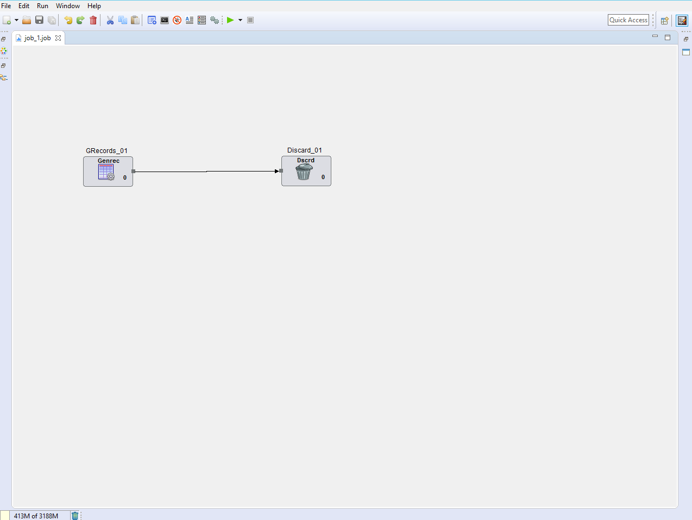
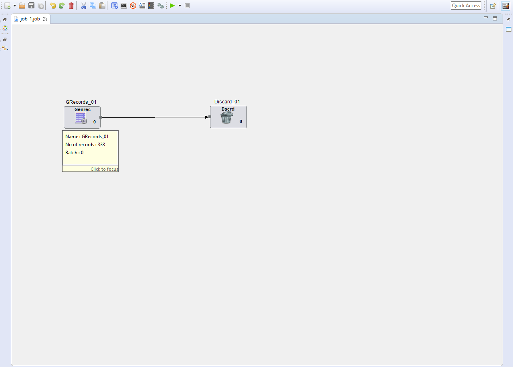

Job Canvas
Job Canvas is the central space where user can drag components from the component palette and place them in it. Users may also double click on any component for directly placing the component in a free area of the canvas.
Components can be connected by links drawn from their respective ports. Component ports are visible as small rectangular images on the edges of components. Components may have IN, OUT and UNUSED ports.

Component Tool tip shows up for each component on mouse-hover. The tool-tip can be focussed into and displays the properties of the component along with errors if any.
